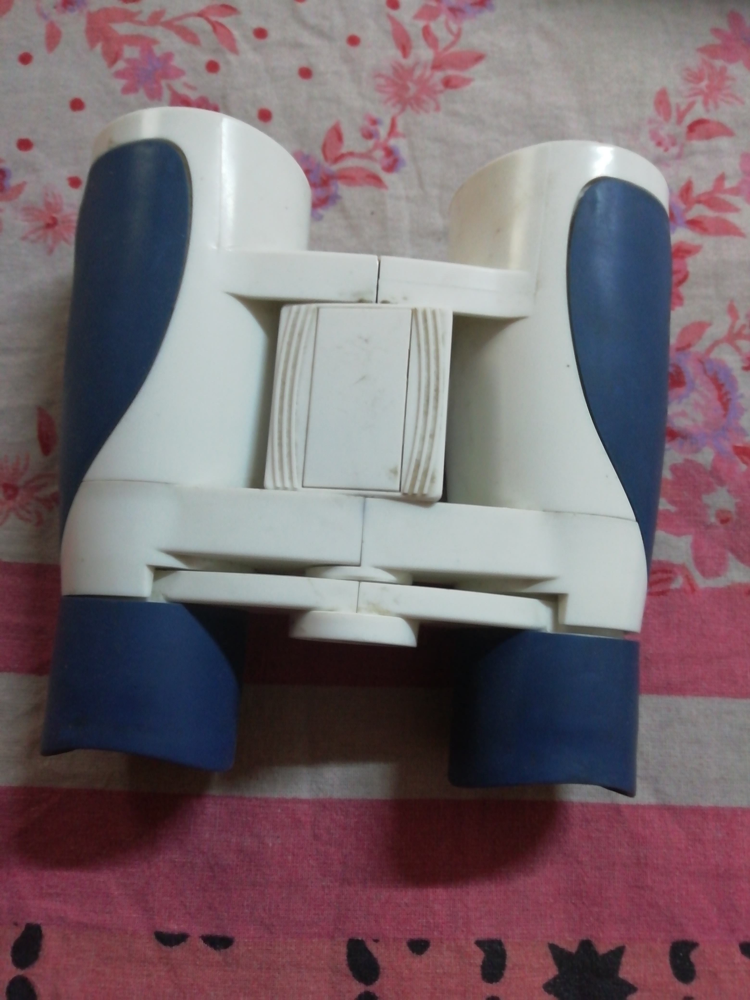
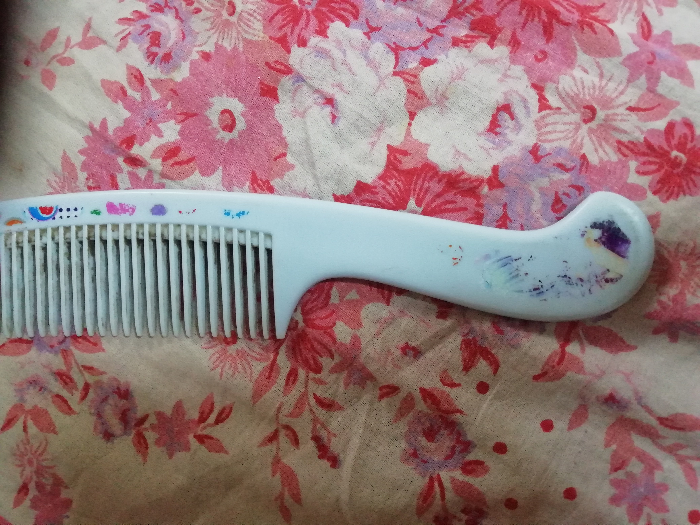
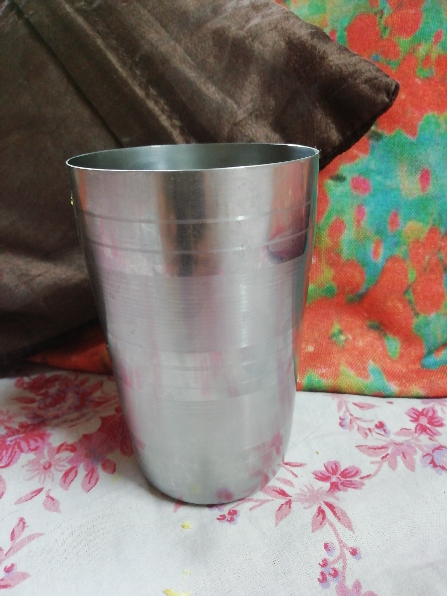
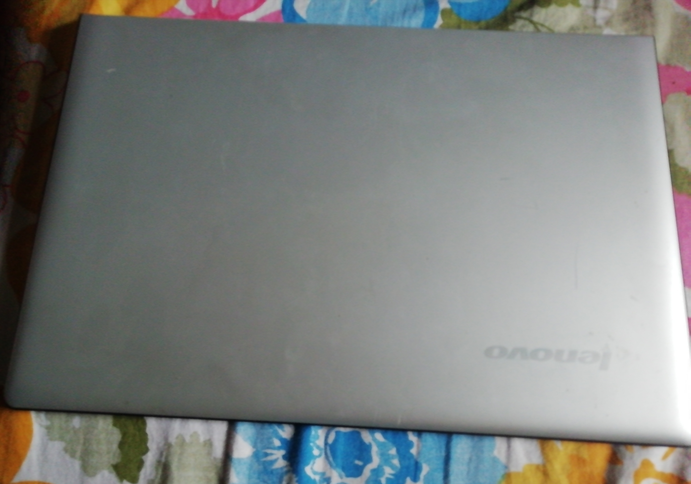
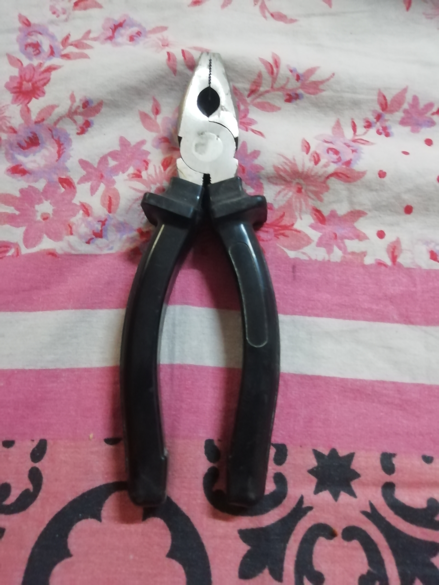
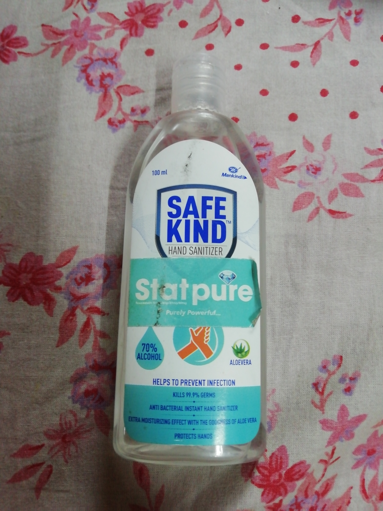
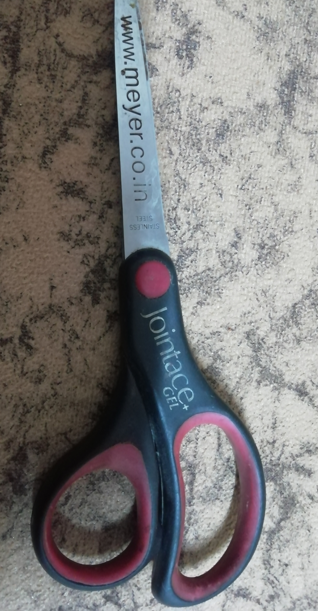
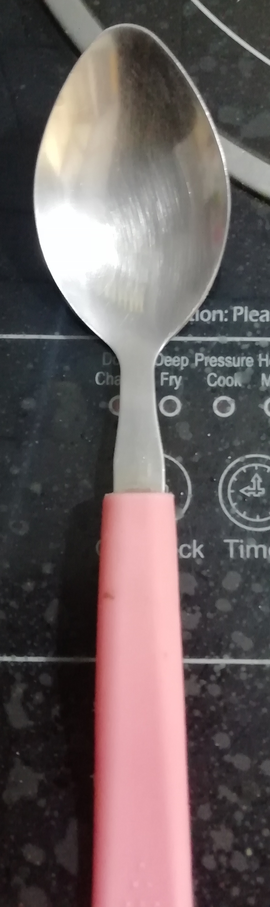
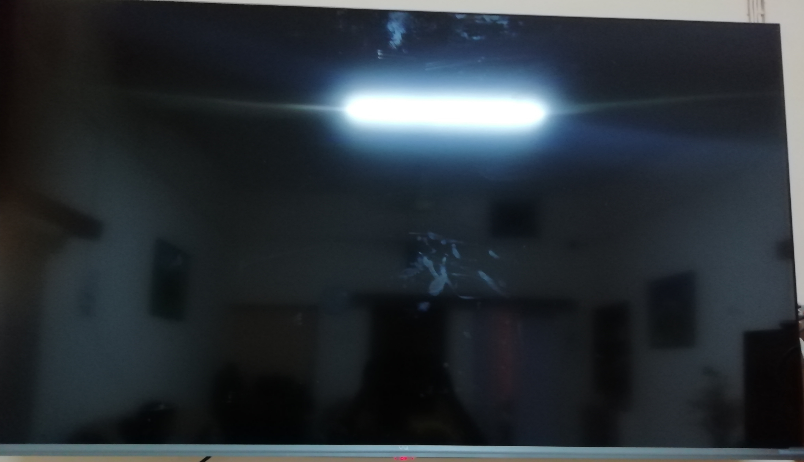

CASE STUDY BETWEEN GOOGLE LENS AND MOBILENET
VS
VS
-
Text Image -

Output on Google Lens - Binoculars
Output on MobileNet - Binoculars
Result- Both are accurate
-
Text Image -

Output on Google Lens - Hairbrush
Output on MobileNet - Microphone
Result- Google Lens is more accurate
-
Text Image -

Output onGoogle Lens - Steel Glass
Output onMobileNet - Jug
Result- Google Lens is more accurate
-
Text Image -
.jpg)
Output onGoogle Lens - Knife
Output on MobileNet - Paper Knife
Result- Both are accurate
-
Text Image -

Output onGoogle Lens - Laptop
Output on MobileNet - Desktop Computer
Result- Google Lens is more accurate
-
Text Image -

Output on Google Lens - Plier
Output on MobileNet - Cloak
Result- Google lens is more accurate
-
Text Image -

Output on Google Lens - Sanitizer
Output on MobileNet - Perfume
Result- Google Lens is more accurate
-
Text Image -

Output on Google Lens - Scissor
Output on MobileNet - Racket
Result- Google Lens is more accurate
-
Text Image -

Output on Google Lens - No Result Found
Output on MobileNet - Ladle
Result- Both are inaccurate
-
Text Image -

Output on Google Lens - Television
Output on MobileNet - Monitor
Result- Google Lens is more accurate
I have tested 10 objects and Google Lens depicted 9 of them correctly and MobileNet depicted only 2 of them correctly.
So according to my case study Google lens is more accurate.